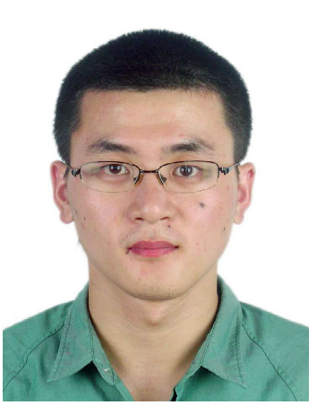
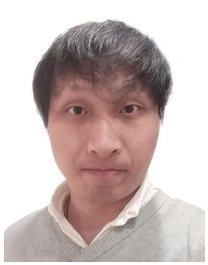

Faculty
Zhiyong Su
PhD students
|  | Zhuheng Lu (陆竹恒) |
|  | Weiwei Mao (茅伟伟) |
Master students
2020-: Peng Zhang, DiCong Lv, Chao Chu, Ziyue Ji, Dilei Huang(Co-Supervision)
2019-: Tiantian Yu, Shiyang Zhou, Guoxing Sun, Dong Qiu, Yong Li (Co-Supervision)
2018-: An Deng, Yihe Wu, Lijun He, Suqin Jiang, Gang Yang, Huifang Li (Co-Supervision)
Alumni
2017-2020: Qi Li, Han Wang, Liang Yao, JiaLin Mei, Linlin Liu
2016-2019: Weihao Li, Hantian Yuan, Shiming Yao, Jingrong Zhang
2015-2018: JiaSheng Xue, Qi Zhang, Ying Ye
2014-2017: Gong Chen, Xiaobin Ma, Xin Wang
2013-2016: Yafei Guo, Xiaosheng Shen, Ying Lu
2012-2015: Yichao Yao (Co-Supervisor), Chenhuan Xing (Co-Supervision)
2011-2014: Yang Yang
2009-2012: Kai Xu, Qi Zhang